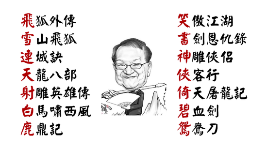

金庸小说顺序顺口溜,金庸小说作品大全一览表
金庸小说顺序顺口溜也可以说是金庸小说对联，江湖传闻是为了使得读者易于分辨，把十四部长、中篇小说书名的第一个字凑成一副对联：“飞雪连天射白鹿，笑书神侠倚碧鸳”。（短篇《越女剑》不包括在内，偏偏金庸的围棋老师陈祖德先生说他最喜爱这篇《越女剑》。）不过也有报道金庸对此否认。
金庸先生说：我写第一部小说时，根本不知道会不会再写第二部；写第二部时，也完全没有想到第三部小说会用什么题材，更加不知道会用什么书名。所以这副对联当然说不上工整，“飞雪”不能对“笑书”，“连天”不能对“神侠”，“白”与“碧”都是仄声。但如出一个上联征对，用字完全自由，总会选几个比较有意思而合规律的字。
1、金庸小说顺序顺口溜：飞雪连天射白鹿，笑书神侠倚碧鸳

2、金庸小说对联口诀对应的作品：
飞是指《飞狐外传》
雪是指《雪山飞狐》
连示指《连城诀》
天是指《天龙八部》
射是指《射雕英雄传》
白是指《白马啸西风》
鹿是指《鹿鼎记》
笑是指《笑傲江湖》
书是指《书剑恩仇录》
神是指《神雕侠侣》
侠是指《侠客行》
倚是指《倚天屠龙记》
碧是指《碧血剑》
鸳是指《鸳鸯刀》
还有一部短篇《越女剑》不包括在对联内。
无论是否为金庸所作，所有金庸小说迷对这个金庸小说顺序顺口溜非常熟悉，而且有研究类书籍也采用过“飞雪连天射白鹿，笑书神侠倚碧鸳”，比如孔庆东的《笑书神侠》。也有很多网站论坛用金庸小说顺序顺口溜做板块。
3、金庸小说按照创作时间来排序是：
1) 1955 年，《书剑恩仇录》，历史背景大概是在公元1756年前后。
2) 1956年，《碧血剑》, 历史背景是公元1634年到1644年。
3) 1957年至1959年，《射雕英雄传》，背景是公元1206年-1227年。
4) 1959年，《雪山飞狐》，历史背景是从公元1780年3月15日开始。
5) 1959年到1961年，《神雕侠侣》，背景是在公元1239年-1260年。
6) 1960年，《飞狐外传》，背景是公元1766年-1770年。
7) 1961年，《倚天屠龙记》，公元1337年-1360年。
8) 1961年，《白马啸西风》，背景是清朝的，时间不明。
9) 1961年，《鸳鸯刀》，背景是在清朝。
10) 1963年，《连城诀》，背景是在清朝。
11) 1963年至1966年，《天龙八部》，公元1094年前后。
12) 1965年，《侠客行》，明朝。
13) 1967年，《笑傲江湖》，明朝中期。
14) 1970年《越女剑》，春秋末年。
15) 1969年到1972年，《鹿鼎记》公元1670年-1689年，康熙年间。
4、金庸小说阅读顺序
如果是第一次读的话，最好还是按金庸小说创作时间顺序读。像《书剑恩仇录》是刚起手，有青涩处；如果先看了《鹿鼎记》，那肯定其他的武侠小说就很难入眼了。或者只挑名著读：射雕三部曲、天龙八部、笑傲江湖、鹿鼎记。捎带上连城诀，也就差不多了。
1) 射雕-神雕-倚天，搭配天龙（因江湖帮派和武功体系都很接近，年代在射雕之前）
2) 书剑-飞狐-雪山（线索型的人物承接一脉相承）
读完《飞狐外传》后再读《雪山飞狐》，老子和儿子的故事不能颠倒了，你懂的；
3) 两部较为独立的大长篇笑傲江湖、鹿鼎记
4) 明显不如大长篇但是仍旧好于那几部中短篇的碧血剑、连城诀、侠客行
5) 实在是看不看都可以仅仅因为是金庸作品的鸳鸯刀、白马、越女剑。
当然了，金庸小说阅读顺序也可以如下所读。
初读：《笑傲江湖》
再读：《连城诀》
四读：《书剑恩仇录》《飞狐外传》（这两部意外地时间相连）《白马啸西风》
七读：《鹿鼎记》
八读：《越女剑》《侠客行》《鸳鸯刀》零碎的后记和其他文体的作品。
5、金庸小说作品大全
| 作品名称 | 发布时间 | 总字数（万） |
| 书剑恩仇录 | 1955年2月8日 | 51.3 |
| 碧血剑 | 1956年1月1日 | 48.8 |
| 射雕英雄传 | 1957年1月1日 | 91.8 |
| 雪山飞狐 | 1959年2月9日 | 13 |
| 神雕侠侣 | 1959年5月20日 | 97.9 |
| 飞狐外传 | 1960年 | 43.9 |
| 白马啸西风 | 1961年 | 6.7 |
| 鸳鸯刀 | 1961年 | 3.4 |
| 倚天屠龙记 | 1961年7月6日 | 95.6 |
| 连城诀 | 1963年 | 22.9 |
| 天龙八部 | 1963年9月3日 | 121.1 |
| 侠客行 | 1966年6月11日 | 36.4 |
| 笑傲江湖 | 1967年3月18日 | 97.9 |
| 鹿鼎记 | 1969年10月24日 | 123 |
| 越女剑 | 1970年 | 1.6 |
对70、80年代出生的人来说，金庸写下的15部作品陪伴了他们整个青春，更代表了他们的青春，如今，大侠走了，但他的精神长存，离开了大侠的我们，还可以从他的作品和影视剧体味到真正的侠客情怀。
扩展阅读：
金庸小说武功排名,金庸小说中十大最强武功排行榜【武功版+人物版】
一秒钟记住本站网址：JinYongXiaoShuo.COM，金庸小说拼音全拼写。